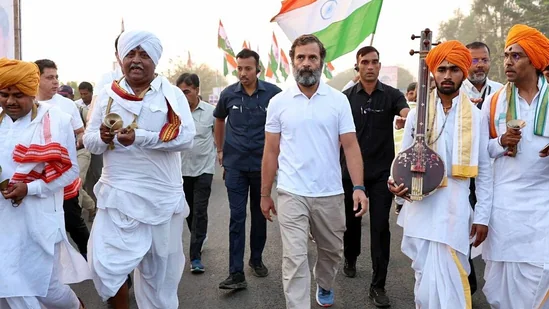
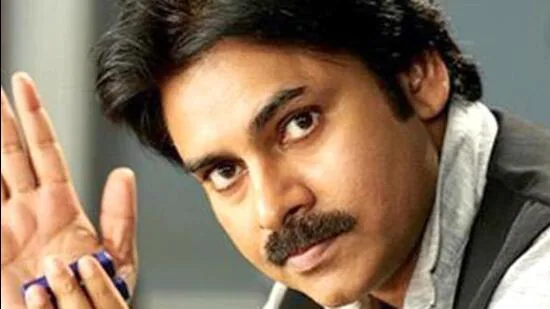

Will Rahul Gandhi attend winter session amid Bharat Jodo Yatra?
By
HT News Desk
| Edited by Swati Bhasin, New Delhi
Will Rahul Gandhi attend the winter session of Parliament next month as the Congress's Bharat Jodo Yatra continues? The ex Congress chief is likely to skip the session. Congress's Jairam Ramesh was quoted as saying by news agency ANI on Saturday that he won't be skipping the Kayakumari to Kashmir Yatra, which is currently in Maharashtra.
Tollywood actor and Jana Sena Party chief Pawan Kalyan said he had discussed various issues with the Prime Minister including the present political situation in the state
